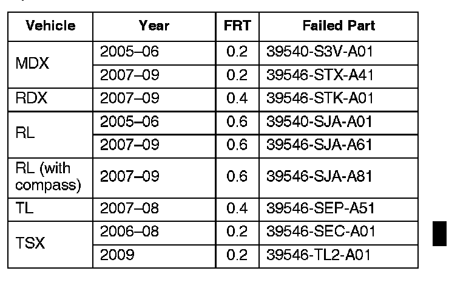

Navigation/Instruments - Clock Time Randomly Changes
08-050January 22, 2010
Applies To:
See VEHICLES AFFECTED
Time on Display Changes Randomly
(Supersedes 08-050, dated December 9, 2009, to revise the information marked by the black bars and asterisks)
*REVISION SUMMARY
Under WARRANTY CLAIM INFORMATION, the model years for the TSX were changed.*
SYMPTOM
The client notices that the clock shown on the sub-display, the audio unit, or the navigation screen randomly changes time, but never by exactly 1 hour.
PROBABLE CAUSE
There is a problem with the real-time clock circuit in the navigation unit.
VEHICLES AFFECTED
2005-09 MDX with Navigation - ALL
2007-09 RDX with Navigation - ALL
2005-09 RL with Navigation - ALL
2007-09 RL with Compass - ALL
2007-08 TL with Navigation - ALL
2006-09 TSX with Navigation - ALL
CORRECTIVE ACTION
Replace the navigation (or compass) unit with a remanufactured unit.
PARTS INFORMATION
For information on navigation unit ordering, see Service Bulletin 06-001, Audio, Navigation, and RES Unit In-Warranty Exchange, and Audio and DVD Player Out-of-Warranty Repair
WARRANTY CLAIM INFORMATION

The normal warranty applies
Operation Number: 0521A3
Defect Code: 03217
Symptom Code: 01201
Skill Level: Repair Technician
DIAGNOSIS
NOTE:
If the client complains the clock jumps by exactly one hour, this service bulletin does not apply. It is likely one of the following:
^ A time zone issue. If the client lives or works close to a time zone boundary, the clock may jump forward or back by one hour. Select Setup, then Clock Adjustment, and make sure Auto Time Zone is set to OFF.
^ A daylight saving time issue. Refer to Service Bulletin 07-022, Navigation Software Updates for Daylight Saving Time (DST), DVD Read Error Message, and Other Listed Symptoms. After doing that service bulletin, select Setup, then Clock Adjustment, and make sure Daylight Savings is set to ON.
When the symptom is occurring, typically when the ignition switch is first turned to ON (II), press the SETUP button, then select Time Adjustment.
Is the time displayed in the sub-display or clock the same incorrect time as in the navigation clock adjustment screen, and do they jump together?
Yes - Go to REPAIR PROCEDURE.
No -
^ If the symptom cannot be duplicated, it is an intermittent failure and the vehicle is OK at this time. Only if the vehicle returns with the same complaint, go to REPAIR PROCEDURE.
^ If the times are different between the navigation time adjustment screen and the sub-display or audio unit display, this service bulletin does not apply. Continue with normal troubleshooting.
REPAIR PROCEDURE
1. Replace the navigation unit:
^ Refer to section 23 of the applicable service manual, or
^ Online, enter keywords NAVI REMOVAL, and select Navigation Unit Removal/Installation from the list.
2. To avoid comebacks, check online, and apply any navigation patches or software updates for the navigation unit. Online, enter keyword SOFTWARE and select any applicable service bulletins from the list.

Disclaimer